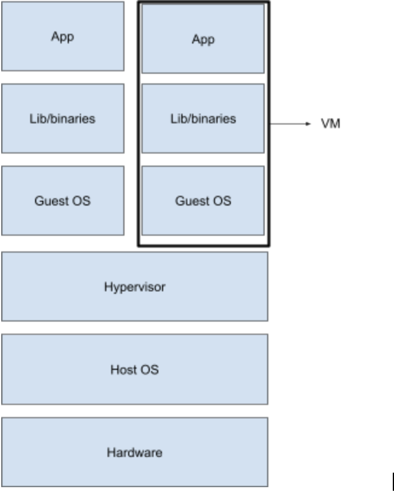
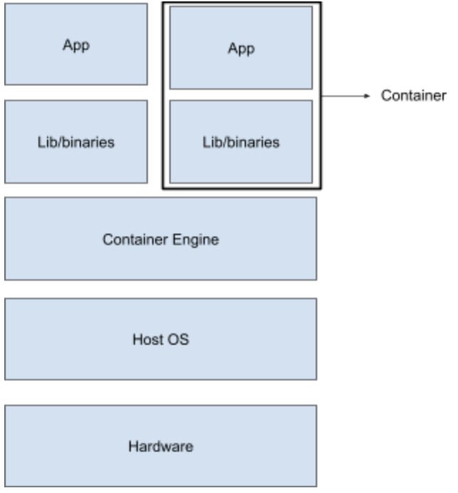
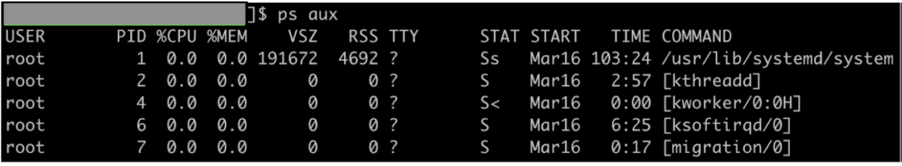
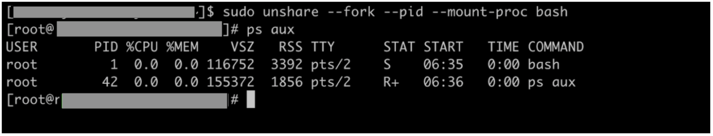
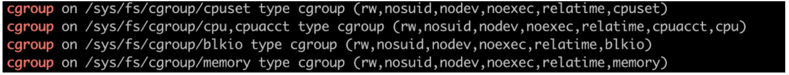
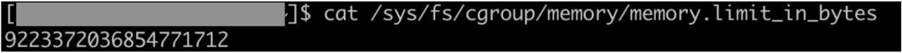
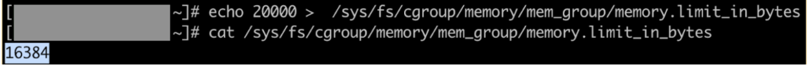

容器介紹
什麼是容器
以下是根據 Docker（一個流行的容器化引擎）對容器的流行定義：
容器是一個標準化的軟體單元，將程式碼及其所有依賴項打包，讓應用程式能夠從一個計算環境快速且可靠地運行到另一個計算環境。
讓我們拆解一下。容器是包含您程式碼及其整個運行時環境的打包。這包括了您的系統庫、二進位檔案和應用程式運行所需的配置檔案。
為什麼需要容器
您可能會想為何我們需要將應用程式連同其依賴包裝在一起。這也涵蓋了定義中的第二部分，
...讓應用程式能夠從一個計算環境快速且可靠地運行到另一個計算環境。
開發人員通常在開發環境（或本機）中編寫程式碼，並在一兩個暫存/測試環境中測試，然後才將程式碼推送到生產環境。理想情況下，為了可靠地在推送到生產前測試應用程式，我們需要所有這些環境在底層作業系統、系統庫等方面保持完全一致。
當然，這種理想狀況難以實現，尤其當我們使用混合的本地（完全控制）與雲端基礎設施供應商（在硬體控制和安全選項方面更受限制），這種情況在如今更為常見。
這正是為什麼我們不只要包裝程式碼，還要包裝依賴；以確保應用程式無論在哪個基礎設施或環境上運行，都能可靠運行。
我們可以在單一主機上運行多個容器。由於容器的實現方式，每個容器在相同主機內擁有自己的隔離環境。這意味著可將單體應用拆分成微服務並打包在容器中。每個微服務在主機中隔離運行。這是容器被使用的另一原因：關注點分離。
提供隔離環境能防止一個容器中應用的故障影響到其他容器。這被稱為_故障隔離_。隔離同時帶來額外的安全好處，因為容器中的進程可見性被限制。
由於大多數容器化解決方案的實現，我們還可以限制在容器內運行的應用程式所使用的資源量。這被稱為_資源限制_。我們會在後面cgroups的章節中更詳細討論這個功能。
虛擬機與容器的差異
我們稍微離題，談談歷史。在上一節中，我們提到容器如何幫助實現關注點分離。在容器廣泛使用之前，虛擬化被用來在同一主機中運行隔離的應用程式（某些情況下至今仍被使用）。
簡單說，虛擬化就是將軟體連同它運行的作業系統副本打包，這個包稱為虛擬機（VM）。VM 中打包的作業系統映像稱為來賓作業系統（Guest OS）。一個稱為 Hypervisor 的元件位於 Guest OS 與 Host OS 之間，負責協調 Guest OS 對底層硬體的存取。你可以在這裡了解更多關於 hypervisor 的資訊。

類似於多個容器能在單一主機運行，多個虛擬機也能在單一主機上運行，因此可以在不同的虛擬機中運行應用程式（或各微服務）來實現關注點分離。
這裡主要聚焦於 VM 與容器的大小差異。由於 VM 附帶了完整的 Guest OS 副本，體積較容器重。若您對 VM 與容器的比較感興趣，可以參考 Backblaze 和 NetApp 的文章。
雖然使用 hypervisor 可以在內核不兼容的主機上運行操作系統（例如在 CentOS 7 上執行 Windows 10 VM），但如果內核可以共享（例如在 CentOS 7 上執行 Ubuntu），由於體積考量，容器會比 VM 更受青睞。共享內核，同時會帶來許多性能優勢，例如更快啟動等。以下為容器工作原理圖：

比較這兩張圖，我們注意到兩點：
-
容器沒有獨立（Guest）作業系統
-
容器引擎是容器與 Host OS 之間的中介，用來協助容器在主機上的生命週期（但不是必要條件）。
下一節將詳細說明容器如何共享與主機相同的作業系統（指內核），卻仍能為應用提供隔離環境。
容器是如何實現的
我們已提過容器不同於虛擬機，容器與主機作業系統共享同一核心，並為應用提供隔離環境。這是在不需要在 Host OS 上運行 Guest OS 的開銷下實現的，多虧了 Linux 內核的兩個特性：cgroups 和 kernel namespaces。
既然觸及容器內部原理，我們應更精確地描述它們。容器是一個或一組 Linux 進程，這些進程受到以下限制： - 對容器外部進程的可見性（使用 namespace 實現） - 它能使用的資源量（使用 cgroups 實現） - 從容器內可呼叫的系統呼叫。想瞭解更多可參考 seccomp。
這些限制使容器應用程式與同一主機上運行的其他進程保持隔離。
現在讓我們詳細介紹 namespaces 和 cgroups。
Namespaces
容器內的進程應只對自身可見，這就是 Linux namespaces 所做的事。概念是進程在 namespace 內無法影響它「看不到」的其他進程。共享一個 namespace 的進程會有在該 namespace 獨特的身份、服務和介面。以下為 Linux 中的 namespaces 清單：
- Mount
共享 mount namespace 的進程組擁有獨立的掛載點與檔案系統視圖。掛載點的變更對 namespace 外不可見。例如可在 mount namespace 中擁有與主機 /var 不同的 /var。
- PID
PID namespace 中的進程 ID 只在該 namespace 內唯一。一個進程可成為其 PID namespace 的根進程（pid 1），並擁有一整個進程樹。
- Network
每個 network namespace 有自己的網卡實體裝置，可配置獨立網路位址。同一 network namespace 內的進程可擁有自己的埠與路由表。
- User
User namespaces 可擁有自己的使用者與群組 ID。這使得主機上非管理員身分的進程在 user namespace 中獲得 root 身份。
- Cgroup
允許在 cgroup namespace 內建立 cgroups。cgroups 會在接下來的章節詳細介紹。
- UTS
此 namespace 有自己的主機名稱和網域名稱。
- IPC
每個 IPC namespace 有自己的 System V 和 POSIX 訊息佇列。
看似複雜，創建 Linux namespace 其實非常簡單。我們來看個 PID namespace 的快速示範。您需要有 sudo 權限的 Linux 系統來操作。
示範：namespaces
- 首先查看主機系統中正在執行的進程（輸出根據系統不同而異）。請注意 pid 1 的進程。

- 使用 unshare 指令創建一個 PID namespace，並在裡面啟動一個 bash 進程。

你會看到 ps aux（其自身也是在該 PID namespace 內的進程）只能看見該 namespace 內的進程。因此輸出只顯示兩個進程。並且請注意，該 namespace 的根進程（pid 1）不是 init，而是我們創建 namespace 時指定的 bash shell。
- 在同一 namespace 再創建一個在背景中睡眠 1000 秒的進程。此進程在 PID namespace 內的 pid 是 44。
- 在另一終端查詢該 sleep 進程在主機上的 pid。
注意 pid 差異（主機為 23844，namespace 內為 44），但兩者指向同一進程（啟動時間及屬性相同）。
Namespaces 也可以巢狀使用，例如從一個 pid namespace 中再創建另一個 pid namespace。嘗試執行 sudo nsenter -t 23844 --pid -r bash 重新進入該 namespace，並在內部創建另一個 pid namespace，會很有趣喔！
Cgroups
cgroup 可定義為一組被限制和監控其資源用量的進程。這些資源如記憶體頁、磁碟 I/O、CPU 等。實際上，cgroups 會根據施加限制的資源種類及違反限制時的行為進行分類。
cgroup 中追蹤資源使用情況並控制進程行為的元件稱為資源子系統（resource-subsystem）或資源控制器（resource controller）。
根據 RHEL 的 cgroups 介紹說明，以下為主要資源控制器及功能：
- blkio — 限制對區塊裝置（如硬碟、固態硬碟、USB）輸入/輸出存取。
- cpu — 使用排程器給予 cgroup 中進程 CPU 存取權。
- cpuacct — 自動產生 cgroup 內進程的 CPU 使用報告。
- cpuset — 將多核心系統的特定 CPU 和記憶體節點指派給 cgroup 內進程。
- devices — 控制 cgroup 內進程存取裝置的權限。
- freezer — 暫停或恢復 cgroup 內的進程。
- memory — 限制 cgroup 內進程的記憶體使用並產生記憶體使用報告。
Cgroups 對每個資源控制器採樹狀分層結構，即各控制器有個別的 cgroup 層級，每個子 cgroup 可繼承其父 cgroup 的特定屬性（如限制）。
我們來個記憶體 cgroup 的簡單示範，幫助理解上述概念。您需要一台 Linux（本例為 RedHat）系統和 sudo 權限。
示範：cgroups
- 先確認您的系統是否安裝 cgroup 工具。執行
mount | grep "^cgroup"。有安裝的話會看到類似輸出：

若未安裝，請執行 sudo yum install libcgroup-tools -y。
- 創建一個名為 mem_group 的記憶體 cgroup，擁有者為 root。指令：
sudo cgcreate -a root -g memory:mem_group。確認 cgroup 建立成功。
/sys/fs/cgroup/<cgroup 類型> 是虛擬檔案系統，新增的 cgroup 被加入為子群組。
- 記憶體 cgroup 可限制該 cgroup 中進程的記憶體使用量。查看 mem_group 的限制，檔案為 memory.limit_in_bytes（詳見此處）。
- 注意 mem_group 繼承了父 cgroup 的限制。

- 現在將記憶體使用上限調低到 20KB（實際數值會向下取到最接近的 2 的次方）。

此限制非常低，因此多數附加在 mem_group 的進程會因記憶體不足（OOM）而被終止。
- 創建新 shell 並加入此 cgroup（需 sudo 權限）。
該進程會遭到 OOM 終止。您可透過 dmesg 日誌確認有 mm_fault_error 訊息。
想進一步練習 cgroups，可參考 Geeks for Geeks 的教學。
回到容器。容器共享主機的內核並為應用提供隔離環境。cgroups 幫助管理容器內進程使用的資源，namespace 幫助隔離容器間的網路堆疊、PID、使用者、群組 ID 和掛載點。
當然，容器還有其他元件協助其完整運作，但這超出本模組範圍。
容器引擎
容器引擎簡化在主機上建立與管理容器的過程。怎麼做呢？
-
容器建立流程通常從容器映像（image）開始。容器映像是打包好的可攜式目標應用程式版本，內含所有運行所需依賴。
-
這些映像要麼已在容器主機（host）上存在（先前建置過），要麼需從遠端映像庫拉取。有時容器引擎會根據一組指令建構映像。
-
當映像取得或建構完成後，容器引擎解包映像，並依映像規格在主機上建立應用的隔離運行環境。
-
容器映像中的檔案會掛載到隔離環境，使應用在容器內順利啟動。
市面上有多種容器引擎，如 Docker、RKT、LXC（最早期之一），不同引擎使用不同映像格式（Docker 與 LXD）。OCI（Open Container Initiative）是 Docker 發起的合作專案，旨在標準化容器運行規範與映像格式。關心該項目者可參考 OCI 的常見問題。
我們將在下一節專注介紹 Docker。